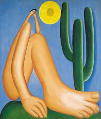

Abaporu

A Negra
Tarsila do Amaral foi uma importante artista brasileira que desempenhou um papel significativo na Semana de Arte Moderna de 1922, um marco no movimento modernista no Brasil.
Nascida em 1886, Tarsila foi uma das primeiras pintoras a explorar a identidade e a cultura brasileira em sua arte. Durante a Semana de Arte Moderna, realizada em São Paulo, Tarsila apresentou algumas de suas obras mais famosas, como "Abaporu" e "A Negra". Essas pinturas, marcadas por cores vibrantes, formas simplificadas e uma abordagem distinta, desafiaram os padrões estéticos tradicionais e representaram uma ruptura com a arte acadêmica vigente na época. A participação de Tarsila do Amaral na Semana de Arte Moderna foi fundamental para consolidar sua posição como uma das artistas mais importantes do movimento modernista brasileiro.
Suas obras inovadoras e autênticas contribuíram para uma redefinição da identidade artística brasileira, incorporando elementos da cultura popular e da natureza do país. Tarsila do Amaral continuou a produzir arte ao longo de sua carreira, tornando-se uma figura icônica e influente no cenário artístico brasileiro. Sua contribuição para a Semana de Arte Moderna de 1922 ajudou a pavimentar o caminho para o desenvolvimento de uma arte mais livre, expressiva e autêntica no Brasil, deixando um legado duradouro na história da arte do país.